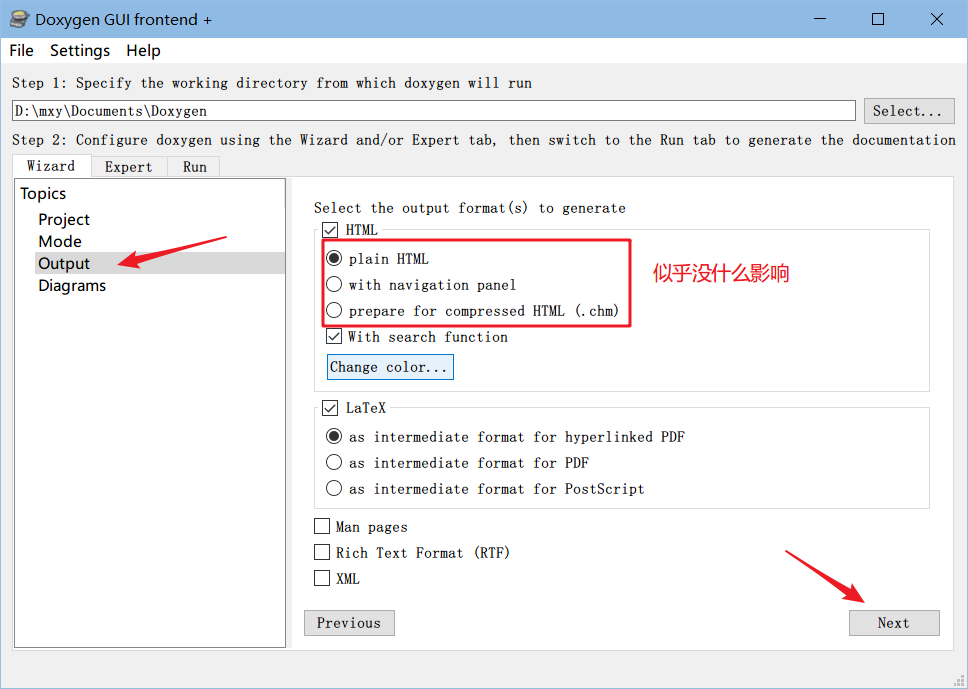
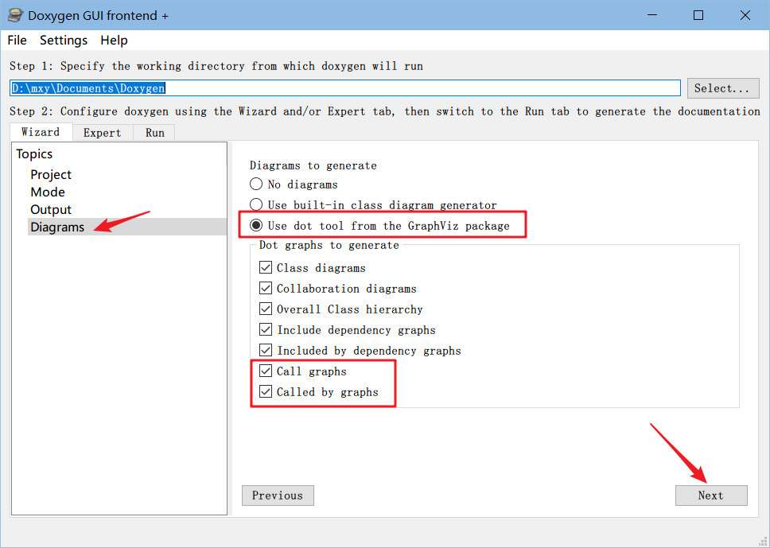
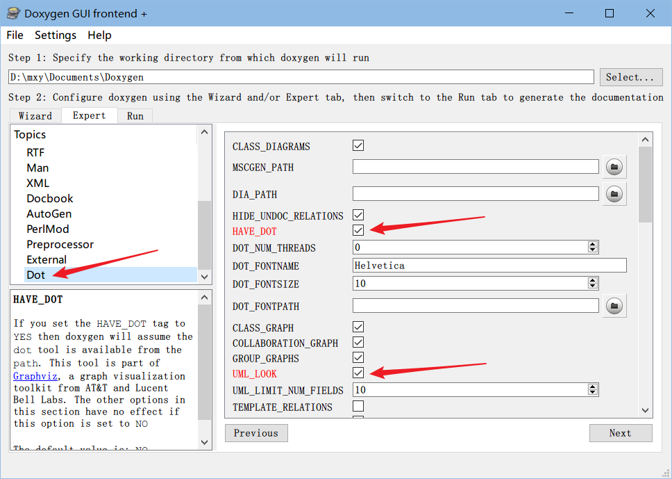
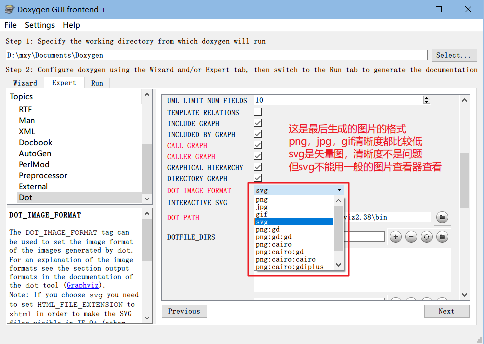
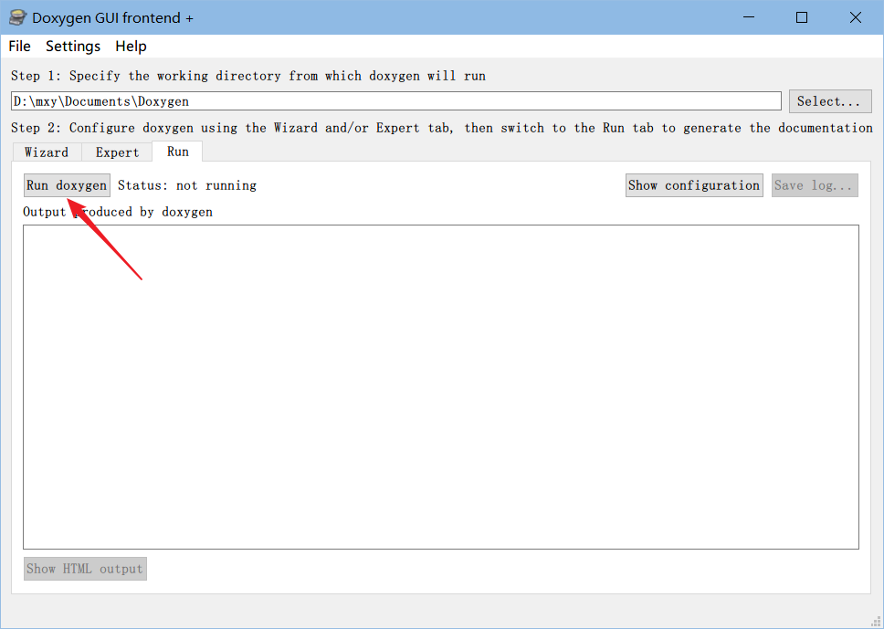
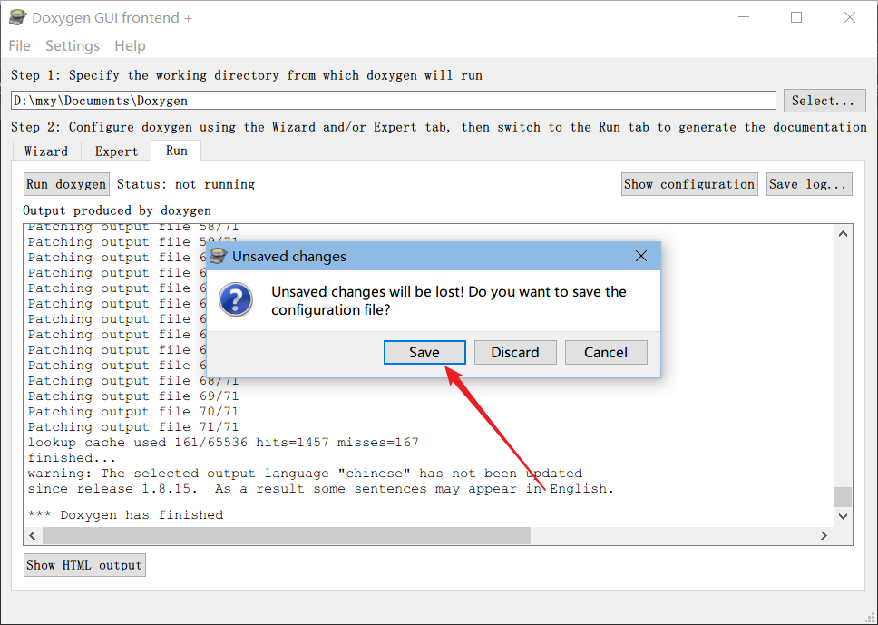
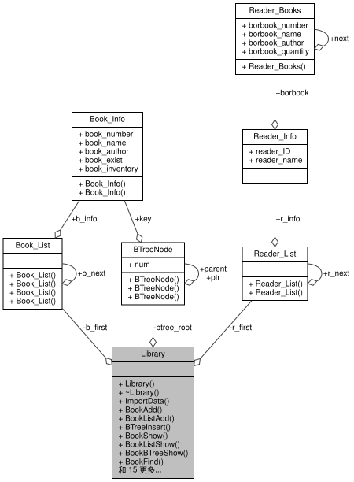

Windows平台使用Doxygen+GraphViz生成函数调用关系图
本文最后更新于：2020年11月19日 上午
刚做了数据结构课程设计，报告要求给出函数调用关系图，然后就想有没有自动生成的工具，所以上网搜了下，总结下搜到的内容大概三类：一是用VS的 code maps ，但是前提是必须是专业版或者企业版，社区版无法安装这个组件；第二个是用 CodeViz 和 Graphviz 实现的，具体怎么操作我也没试过了；然后就是我现在要说的，也是网上比较多的一种方案，用 Doxygen + GraphViz 自动生成。
下载
如题所述，需要用到两个软件：
Doxygen ：http://www.doxygen.nl/ 【下载】
GraphViz ：http://www.graphviz.org/【下载】
点击【下载】可以直接下载官方的安装包
安装
安装步骤很简单，除了安装路径可以自己改一下，其它默认就行，一路 next 下去就安装好了
配置
主要是配置Doxygen，GraphViz安装好放那儿就行了
运行Doxywizard，界面如图：

1.工作目录需要设置一下，随便设一个空文件夹就可以，项目名称是你项目的名称，其实写什么不重要，最后生成的是一个HTML的网页，项目名称就是这个网页的名字，源码地址必须要设置正确，也就是程序代码的文件夹路径，递进扫描勾选上没坏处吧，然后自己输出路径选一个位置保存，设置完点击右下角 Next

2.如图勾选上就行，Next

3.默认就可以，红框的选项对生成的函数调用图没什么影响，Change color... 可以更改颜色，下面PDF相关的，默认所有的图片都会生成一个PDF文件，继续 Next

4.这一步很重要，这就使用到我们安装的 GraphViz 了，如图勾选上，继续 Next

5.上一个点击 Next 后实际上直接跳到了 Run 标签页，但是还要进行一些设置，所以点击左侧的 Expert 标签，Topics 列表中第一项 Project ，如图，默认为English，可以修改为 Chinese ，但是这一步的语言并不影响生成的函数调用图，只是最后生成的网页为中文

6.左侧选择 Build ，如图将右侧前面几项勾选上

7.左侧往下滑找到 Dot ，如图把对应的勾选上

8.还是 Dot 往下滑，如图把对应的勾选上，DOT_IMAGE_FORMAT 也就是生成的图片的格式，自己根据自己需要选择

9.关于图片格式简单说一下，自动生成的 png ， jpg 和 gif 格式清晰度都比较低，svg 格式是矢量图，清晰度肯定是没问题的，不过 svg 格式图片不能用一般的图片查看器查看，电脑上浏览器就可以查看，如果是要插入到WORD中那也是没问题的，自己可以根据需要选择，前面第③步也提到了函数调用图会生成 PDF 文件，PDF格式的函数调用图也是清晰的

10.到此所有的设置就已经设好了，再将标签页切换到 Run ，点击左侧的 Run doxygen 即可，等待程序自动运行直至结束

11.如图输出 Doxygen has finished 的提示就已经完成了，点击左下角的 Show HTML output 就可以通过浏览器查看生成的函数调用图了，所有生成的文件也可以在第一步设置的保存位置找到

12.Doxygen软件默认不会保存你做的这些设置，但是可以手动保存，下一次使用的时候就可以只更改不同的设置就可以了

效果图
附上一个效果图

结语
以上仅作为个人学习记录，为了写自己的课设报告，参考的网上的教程一步步做的，对 Doxygen 以及 GraphViz 我也并不太了解，有需要再深入学习吧，现在能作为工具用好它们也就可以了！
本博客所有文章除特别声明外，均采用 CC BY-SA 4.0 协议 ，转载请注明出处！